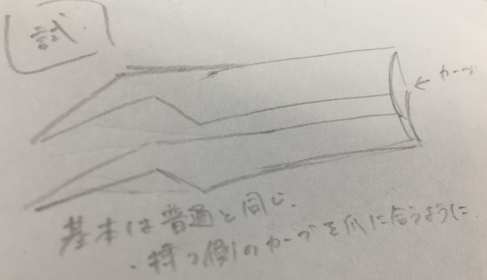
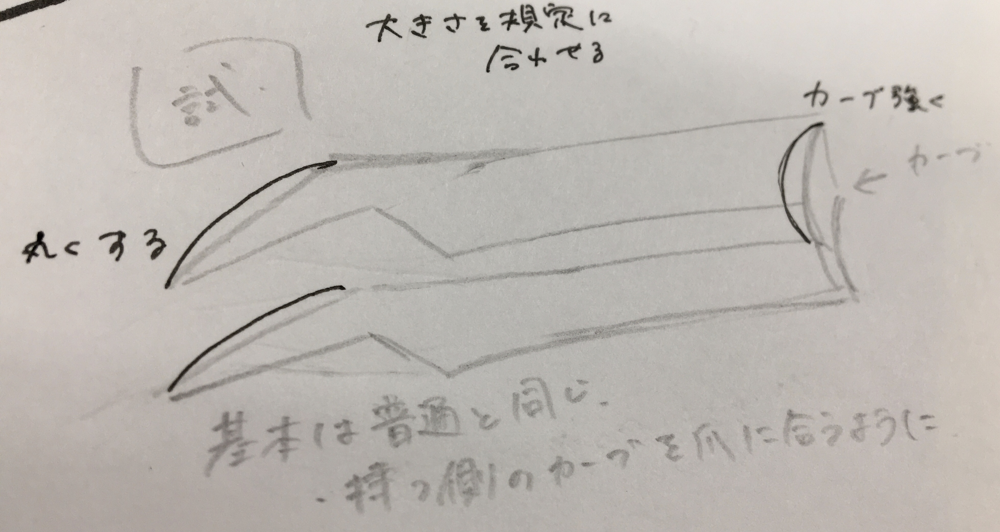

試作品 サイズが大きすぎる、爪に沿っていない、先がガタガタしているのがわかる。

改善案

完成品
説明・想い
使い方はほぼ普通と同じだけど、ひとつ機能を増やしてネイルに特化するようにしました。
ホログラムをつけるときに、ピンセットで爪に乗せたあとそのまま面で押さえたいなと思っていたのを実現させました。 使用例YouTube（音はありません）
学び
- サイズを無視して作ってしまっても、ソリッド→検査 で計測して ソリッド→修正→尺度 で大きさを変えられる。
- 浮いている部分がある場合は作品の向きを変えて浮いている部分を減らす。
- 斜めに浮いている場合、カーブさせると綺麗にプリントされる。